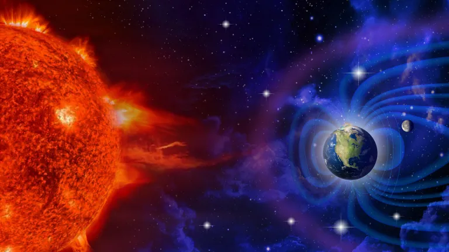
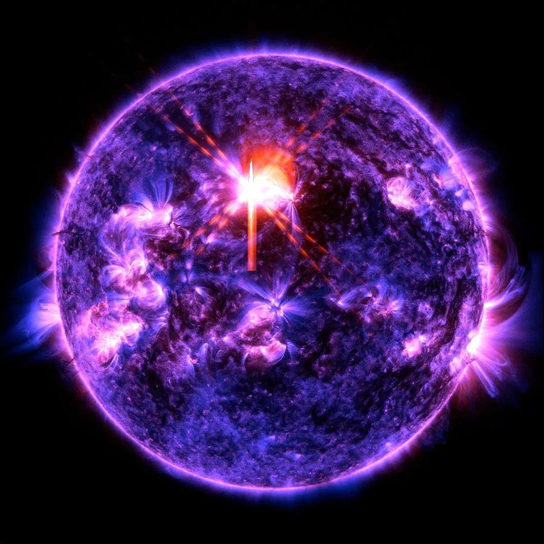

Table of Contents |
|---|
| Abstract |
| Introduction |
| Analysis and Discussion |
| References |
This project provides a general overview of space weather and its effects on our daily lives. It details the various forms space weather takes, such as solar flares and geomagnetic storms, and explains how these space events affect our technology, communication networks, and power grids on Earth.
Space weather, despite its name, is not traditional atmospheric weather; rather, it represents the dynamic environmental conditions of the Sun-Earth system. Driven by solar winds and flares, these energetic disturbances interact directly with Earth's ionosphere and thermosphere. In our highly connected world, these cosmic shifts pose a significant danger to human infrastructure, threatening to disrupt critical satellite communications, navigation systems, and terrestrial power grids. Here's a example picture of space weathers interraction with earth:

Space Weather is the physical and phenomenological state of natural space environments. The Sun is its main source, which even 150 million kilometers away, can affect the Earth and its enviorment. The Sun is a dynamic and complex star continiuesly emitting radiation. Those particals of radiation are better knowns as space wind.
In addition to the radiation the Sun also produces a magnetic field which covers our whole solar system called the Interplanetary Magnetic Field (IMF). Conditions on the Suns visible surface (Solar Surface) and in its outermost atmosphere, which is extremely hot even hotter than the Sun's surface, about 1 million °C compared to 5,500 °C (9,940 °F) according to UCAR (University Corporation for Atmospheric Research) can cause a multitude of Space events such as: Solar flares, Coronal Mass Ejections (CMEs), Solar Energetic Proton (SEP) events and High-speed Solar wind Streams (HSS) that create changes in ambient plasma, magnetic fields, radiation, particle flows in space, and interaction with the magnetosphere.
Let's talk about Solar Flares first to give you an understanding of these phenomenons. Solar Flare's are explosions happening on the suns surface emitting radiation through the space. Those radiations are caused by high speed particles that happen due to those explosions. Another thing about those solar flames is that the number of those flares increase approximetely every 11 years. Some of those flares may be small but some even are big enough that their radiation reaches the Earth.

Figure 2: An illustration of Strong Solar Flare erupting from the star.
Credit: NASA/SDO , image from NASA’s Solar Dynamics Observatory (SDO)
my reference sections